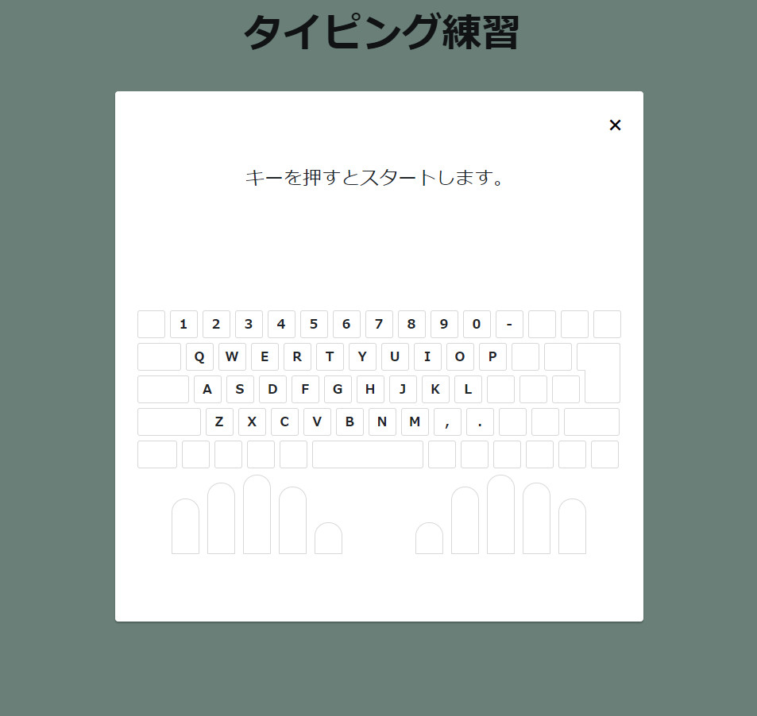
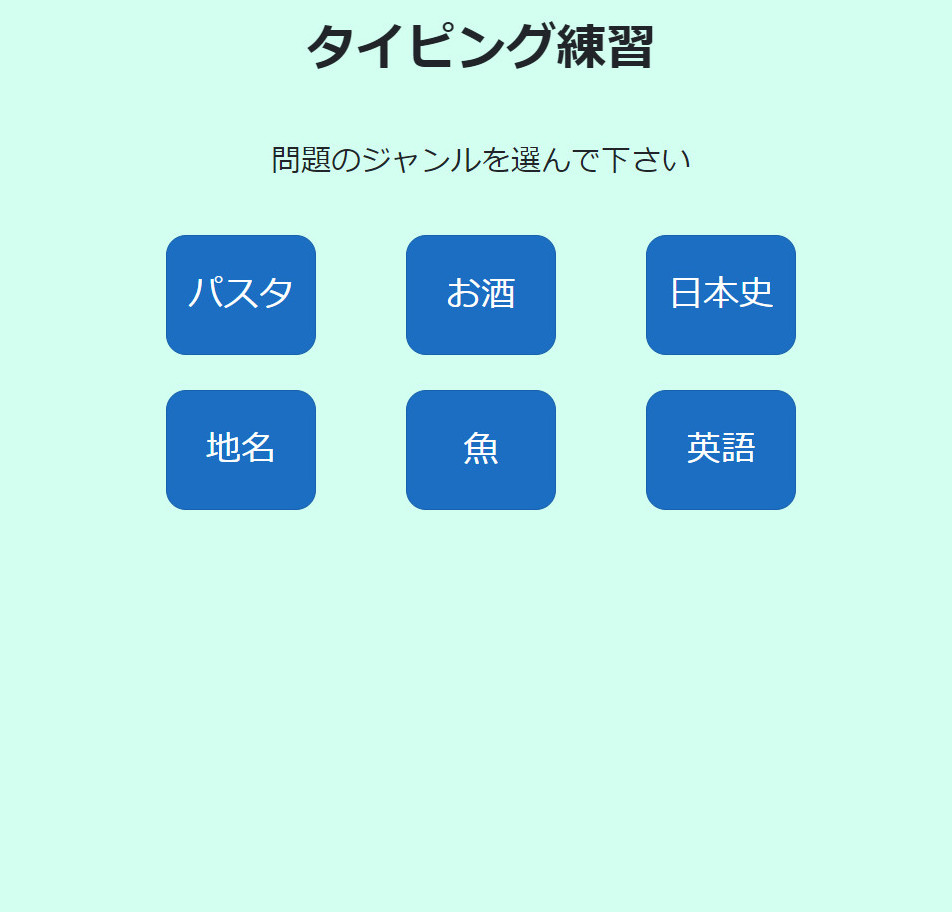
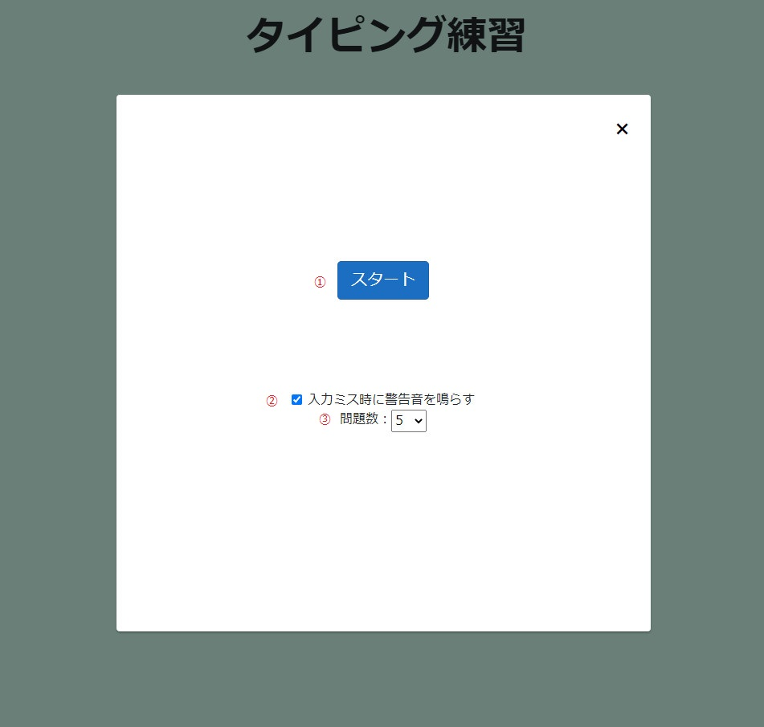
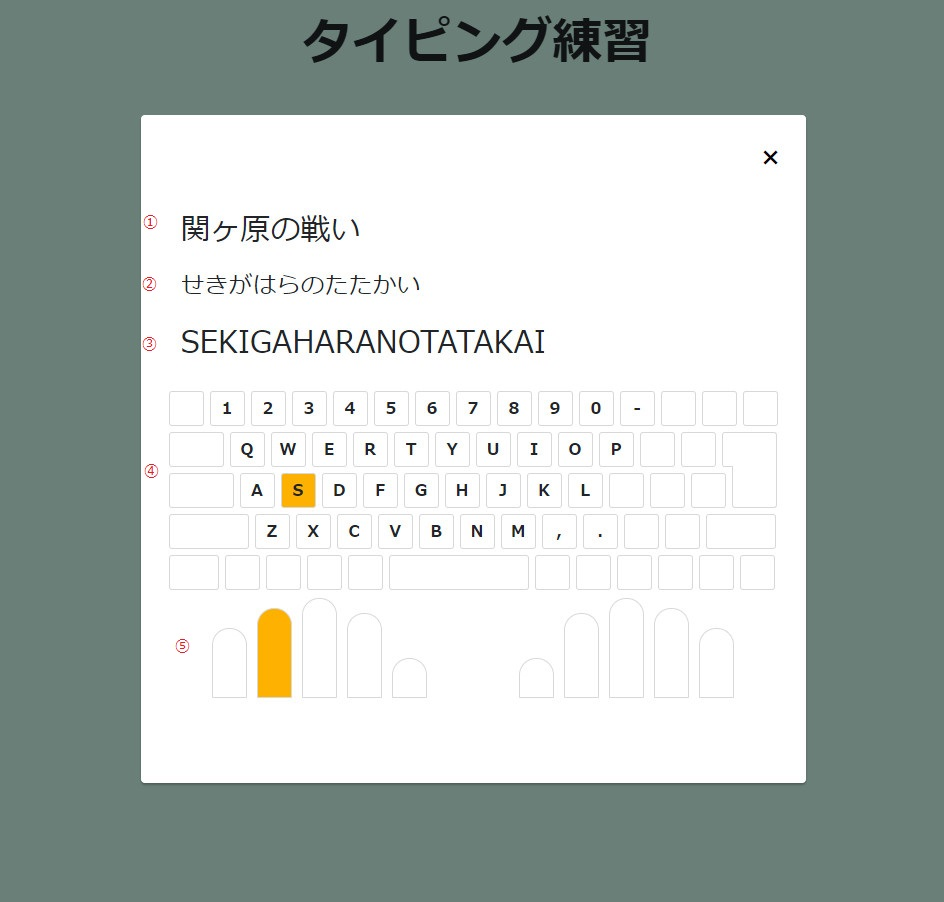
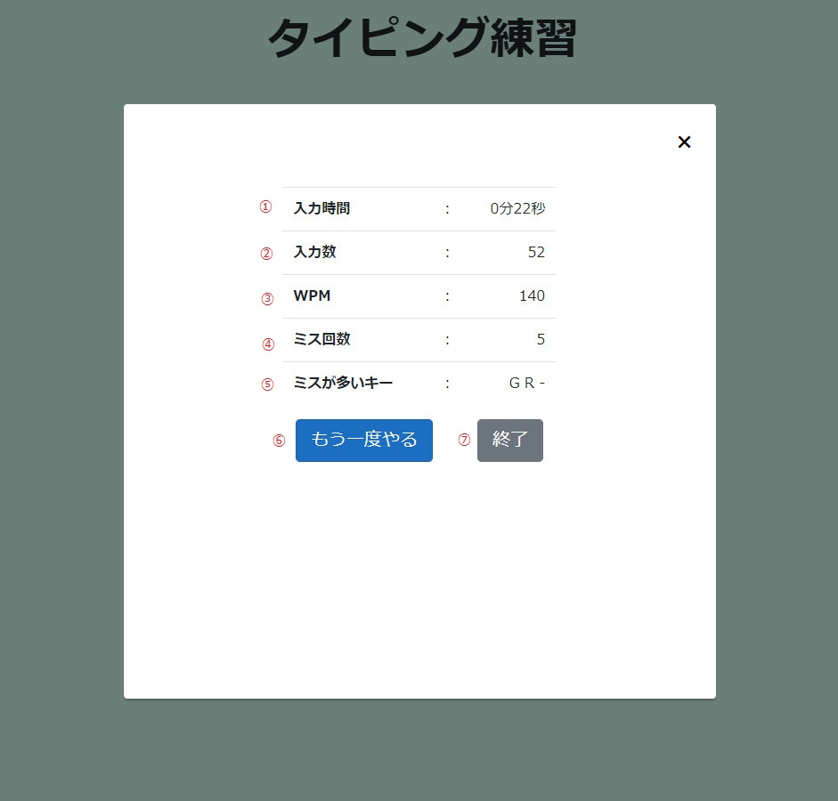

タイピング練習webアプリ
ページURL
https://yoshitaka7144.github.io/typing
Github
https://github.com/yoshitaka7144/typing
目的
- Blazor WebAssemblyを使用した簡単なwebアプリケーション作成
- C#、簡単なデザイン（HTML、CSS）のプログラミング勉強の為
- e-typing様のデザインや大まかな仕様を参考、真似て作成
制作期間
約一週間
制作ツール等
Visual Studio 2019（C# Blazor WebAssemblyアプリプロジェクト）
参考サイト等
e-typing
https://www.e-typing.ne.jp/
Blazored Modal
https://github.com/Blazored/Modal
Blazorで作成したウェブサイトをGitHub Pagesで公開する
https://qiita.com/nobu17/items/116a0d1c949885e21d70
作品紹介、使用方法
Blazor WebAssemblyを使用して作成したタイピング練習webアプリケーションです。
初期画面

ジャンルを選択するとスタート画面へ進みます。（モーダルウィンドウが開かれます。）
スタート画面

①：クリックするとタイピング画面に進みます。
②：警告音のON/OFFを選択します。
③：出題される問題数を設定します。
タイピング画面
何かしらのキーを押下で問題がスタートします。

①：問題文が表示されます。
②：読み（ひらがな）が表示されます。
③：アルファベット（入力キー）が表示されます。入力済みの文字は色付きで表示されます。
④：次に入力するキーが色付きで表示されます。
⑤：入力キーに対応する指が色付きで表示されます。
結果表示画面

①：問題終了までに経過した時間が表示されます。
②：合計の入力数が表示されます。
③：１分あたりの入力文字数が表示されます。
④：入力ミス回数が表示されます。
⑤：入力ミスが多かったキーの上位３つが表示されます。
⑥：スタート画面に戻ります。
⑦：モーダルウィンドウを閉じて初期画面に戻ります。
感想、反省点等
Blazor WebAssemblyの利用方法の学習に時間を割いてしまい、タイピング機能部分やデザインへの時間配分が少なくなってしまいました。以下の項目を次回タイピングサイトを作成する際には改善したいです。
- 複数の入力方法がある文字（'zi'と'ji'等）の対応
- 自分なりのデザイン
- データベースを使用し、問題の追加、削除等の編集画面の作成